CrashCheck · for AI patches
Kill it mid-write.
Read what survived.
Tests call the handler once and nothing goes wrong. CrashCheck kills the worker after every store commit, redelivers the same event to a fresh process, and reads what survived.
One command
One verdict. An exit code CI can block on.
$ uv run nemisis check --base fixture:sqlite-credit-v1/buggy \
--candidate fixture:sqlite-credit-v1/misleading-green --mode local
NEMISIS CRASHCHECK — LOCAL
execution: COMPLETED
integrity: VALID
verdict: PATCH_FAILED_STILL_REPRODUCES
summary: The candidate replayed evt_1042 to a durable +$50 duplicate effect.
…
hypotheses: 2 run -> selected effect-commit (effect-commit-v1)
…
timeline: $25.00 durable -> SIGKILL -> fresh worker -> $50.00
…
exit code 1Real stdout of that command. Each … stands for lines left out: the capsule, engine and commit digests; the no-crash control; the capsule, manifest and report paths. Nothing else is elided, and a candidate that fails its boundary worlds is never swept, so there is no sweep: line.
Every kill point replayed to exactly once.
A crash window still duplicates the effect.
A write CrashCheck could not attribute. No verdict, the reason named.
uv tool install "git+https://github.com/Alex-lop/Nemisis@main"
Proof, labelled
What is proven. What is refused. What is not.
- Proven locally
- The double-credit hero, five kill worlds per role, the whole suite green on CPython 3.12 and 3.13, a committed benchmark. CI counts the tests.
- Refused, by design
- A write around the store — a table, a header field, a rowid, a file, a permission bit. Two hostile reviews found eleven handlers an earlier engine blessed; fifteen such shapes are now pinned as refusals, each named in the summary.
- Red-teamed nightly
- Generated handlers graded by an independent oracle: 300 of 300 agreed in the nightly's first GitHub run, seed 20260907.
- Not proven
- A live model-written patch.
LIVEstaysBLOCKEDuntil a receipt exists.
Read the proof ledger, the boundary, and the evidence viewer.

The open square is the write that never happened. CrashCheck is how you know.